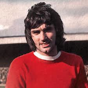
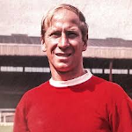
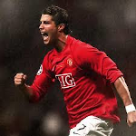
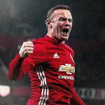

George BestIf I’d been born ugly, you’d never have heard of Pelé.
Many a true word is spoken in jest, and few would argue George Best was the most naturally gifted footballer Britain has produced. Speed, balance, vision, superb close control, the ability to create chances and score from seemingly impossible situations tells half the story. The other half was an uncontainable zest for the game as it should be played, a ceaseless trickery and joy. Pelé, for his part, dubbed United’s no.7 the greatest player in the world
...
A skinny teenager from Belfast's Cregagh estate, Best was spotted by United scout Bob Bishop, who famously told Matt Busby: Boss, I think I’ve found you a genius
.
Having fought off initial homesickness, Best turned professional on his 17th birthday in May 1963, made his debut in September – and scored on his second appearance. A first cap for Northern Ireland swiftly followed. And in 1964/65, alongside Denis Law, Bobby Charlton and David Herd, Best was a key figure in the Reds’ first title triumph since the pre-Munich era.
The following season he almost single-handedly destroyed Benfica in the European Cup quarter-final in their own back yard. After scoring twice in a 5-1 success to inflict the Lisbon giants’ first home defeat in Europe he was dubbed ‘El Beatle’.
A second title followed in 1967, and Best proved the scourge of Benfica again a year later in the 1968 European Cup Final, giving the Reds a 2-1 extra-time lead en route to a 4-1 success. Best’s 28 goals that season – he was PFA and European Footballer of the Year – made him United's top scorer, a position he retained over the next four campaigns.
As the Busby era ended and an ageing side was dismantled, Best struggled with the personal demons that would dog him until his death in November 2005. He famously ‘retired’ to Marbella in 1972, before coming back again and eventually leaving for good in January 1974 for a globe-trotting series of destinations taking in, among others, the rather unlikely surrounds of Dunstable Town, Fulham, Los Angeles Aztecs, Brisbane Lions and the Jewish Guild of South Africa.
As he asked, he should be remembered for the back-page headlines, not the front. And what glorious memories they are. His 361 league appearances in Red brought 136 goals; he holds the post-War record for the most goals by a United player in a single match – six versus Northampton Town, in an 8-2 FA Cup fifth-round mauling in 1970.
Best’s send-off in November 2005, a riotous afternoon of applause at West Ham, was followed by a game of which he would have been justly proud. Appropriately enough, fellow Irishman John O’Shea netted the winner.
Sir Bobby Charlton Nobody embodies the values of Manchester United better than Sir Bobby Charlton. Having survived the trauma of the Munich Air Disaster when aged just 20, he played as if every game was for his fallen colleagues, recovering from his injuries to reach the pinnacle for both club and country. In a 17-year playing career with the Reds, he played 758 games and scored 249 goals - both of which were longstanding records until, respectively, Ryan Giggs in 2008 and Wayne Rooney in 2017 surpassed his feats.
Highly coveted by clubs across the country, the young Charlton, nephew of the great Newcastle United striker Jackie Milburn, joined Matt Busby's Manchester United as a schoolboy in 1953 and turned professional with the club in October 1954.
After winning the FA Youth Cup in 1954, 1955 and 1956, his first-team debut came on 6 October 1956, against Charlton Athletic at Old Trafford, and the youngster made an immediate impact. He scored twice in the Reds' 4-2 league victory, despite carrying an injury. Mr Busby asked me if I was okay,
recalled Sir Bobby. I actually had a sprained ankle, but I wasn’t going to admit to it and I crossed my fingers and said ‘yes’.
Despite his dramatic bow, Charlton didn’t command a regular place until the latter stages of the 1956/57 season, notching 10 goals as Busby's 'Babes' won the league title - the fifth in the club's history. Competition for a first-team spot was intense, but a hat-trick against Bolton Wanderers during the next campaign certainly helped his cause - and Busby found it harder and harder to leave out the powerful young forward.
In February 1958, Charlton scored twice in United’s 3-3 draw against Red Star Belgrade as the Babes sealed a place in the semi-finals of the European Cup. Disaster struck on their return, when the aeroplane taking the squad home crashed in Munich after refuelling. Twenty-three people, including eight of his team-mates, perished and Charlton was among those injured. However, his wounds were relatively minor and he was back in action within a month, eventually helping the Reds to reach the FA Cup final. United lost 2-0 to Bolton Wanderers at Wembley, but Charlton and co returned in 1963 to win the same trophy by beating Leicester City.
The England international proved to be an integral component of United's rebuilding process after Munich, plying his trade across the field while the rest of the side was constructed. A permanent switch to a deep-lying forward role brought the best from him, and he was vital as Busby's men won league titles in 1965 and 1967.
Shortly before the 1966 World Cup, Charlton was named Football Writers’ Association Player of the Year and European Footballer of the Year in quick succession. He went on to play a starring role as Alf Ramsey’s side won the tournament, scoring twice in the semi-final win over Portugal. Charlton earned 106 caps in total – three as captain - and his tally of 49 goals stood as an England record from May 1970 until September 2015 when Wayne Rooney broke it with his 50th strike.
Although winning the World Cup is seen as the pinnacle of achievement in football, Charlton’s finest hour at club level came in May 1968 when he captained United to European Cup glory at Wembley. He scored twice in the 4-1 final win over Benfica but famously missed the post-match celebrations, instead conducting a solitary remembrance of the friends he had lost in the Munich tragedy 10 years earlier.
The skipper continued to entertain United fans as part of the famed Best-Law-Charlton triumvirate before he retired in 1973. He then spent two years as manager and player-manager at Preston North End before resigning in August 1975. Bobby briefly played for Waterford in the Republic of Ireland in 1976 before accepting a boardroom position at Wigan Athletic, where he took over as caretaker-manager during season 1982/83.
In June 1984, Charlton became a director of Manchester United. Ten years later, he was knighted, having previously been awarded the OBE and CBE. A respected ambassador for his club, English football and the game across the world football, Sir Bobby Charlton is a figurehead: a link with the club’s past, present and future.
 David Beckham Arguably one of world football’s biggest names, David Beckham is a global phenomenon but a part of him will be forever Red. A decade spent marauding up United’s right wing contributed to the most successful period in the club’s history, and his 57-yard strike against Wimbledon is surely one of the most replayed goals of all time. He followed in the footsteps of his boyhood idol Bryan Robson by eventually captaining England, and he is the only England player to have scored in three different World Cups.
David Beckham Arguably one of world football’s biggest names, David Beckham is a global phenomenon but a part of him will be forever Red. A decade spent marauding up United’s right wing contributed to the most successful period in the club’s history, and his 57-yard strike against Wimbledon is surely one of the most replayed goals of all time. He followed in the footsteps of his boyhood idol Bryan Robson by eventually captaining England, and he is the only England player to have scored in three different World Cups.
The story began in July 1991 when a lifelong United fan moved north from Leytonstone to sign apprentice forms for the Reds. He formed part of the Class of ‘92 that won the FA Youth Cup along with Ryan Giggs, Nicky Butt, Paul Scholes and Gary Neville but had to wait for his league debut - at home to Leeds United on 2 April 1995. The departure of Andrei Kanchelskis freed up a place of the right of midfield, and Beckham made it his own. Bagging the winner in the FA Cup semi-final against Chelsea proved he was a man for the big occasion, and the season ended with United winning a second Double.Beckham began the 1996/97 campaign with that goal from the halfway line at Selhurst Park and a month later began his England journey with a debut against Moldova. That season brought another Premiership medal, but in 1998 Arsenal took the title back as Beckham headed for the World Cup in France. After being left out of the starting line-up for England’s first two matches, he then scored a stunning free-kick against Colombia and was hailed a national hero. It wasn’t to last. Facing Argentina in the second round, he was sent off for a foul on Diego Simeone and ten-man England were knocked out.Mocked by the press and vilified by fans across the country, he was welcomed back into the arms of the United family. Beckham responded by scoring a trademark free-kick against Leicester City in the first Premier League game of 1998/99, and went on to enjoy a season that would have been beyond his wildest dreams as the Reds won the Treble. Among his many contributions to that glorious campaign were the equaliser against Tottenham Hotspur in the final league fixture, as Sir Alex Ferguson's men came from behind to clinch the title at Old Trafford, and the two corners from which United scored last-gasp goals through Teddy Sheringham and Ole Gunnar Solskjaer to beat Bayern Munich in the Champions League final.The following season brought his fourth Premiership winner's medal and Beckham was voted the second best player in Europe and the world as Rivaldo of Barcelona and Brazil pipped him to both awards. 2000/01 was another Premiership-winning season and having been handed the England captaincy he almost single-handedly booked his country’s place in the 2002 World Cup finals with an incredible matchwinning performance against Greece at Old Trafford.Ever the trend-setter, Beckham introduced the world to the word 'metatarsal' when he broke his foot in a Champions League match against Deportivo la Coruna but recovered in time to score a redemptive penalty against Argentina in the World Cup.The next season proved to be his final one at Old Trafford and after months of speculation, Beckham made the switch to Real Madrid in the summer of 2003 but not before picking up his fifth Premiership medal and signing off in style with a final free-kick goal in his last United game against Everton.Beckham spent four seasons in Spain, winning La Liga in the last of those, before signing for LA Galaxy, where he won two MLS Cups. Two loan spells with AC Milan followed before he moved to Paris Saint-Germain in January 2013 and helped them to win their first French league title for 19 years. He played his last competitive match before retiring from football, Lorient v PSG, on 26 May 2013 - also the 14th anniversary of his finest hour in a United shirt, the night when the Treble was won.Beckham is England’s second most-capped outfield player with 115 appearances.
Cristiano Ronaldo Cristiano Ronaldo exhausted all superlatives during his six years with United, while he matured from an inexperienced, young winger in 2003 into officially the best footballer on the planet in 2009. On the day he departed for Real Madrid in a deal worth £80m - making him the world's most expensive player - his former manager Sir Alex Ferguson said, Cristiano has been a marvellous player for Manchester United. His contribution has been a major factor in the club’s success in that time and his talent, is ability to entertain and his infectious personality have enthralled fans the world over.
The story goes that Sir Alex was persuaded to buy Ronaldo - largely unknown when he signed as an 18-year-old for £12.24m in 2003 - by his players on the plane home from a pre-season friendly against Sporting. In truth, the boss had long been aware of his ability. The urgency stemmed from other clubs’ increasing interest. This was a target Sir Alex simply could miss out on.
Ronaldo wasted little time in showing off his sublime skills with a stunning 30-minute debut against Bolton at OT in August 2003. There was a buzz of excitement as soon as he stepped off the bench and, after 39 appearances and eight goals that season – including the opener in the 3-0 FA Cup final win over Millwall – he was named Sir Matt Busby Player of the Year.
His second term didn’t quite live up to his first, but late season form saw him end 2004/05 with nine goals in 50 appearances. In 2005/06 Ronny again reserved his best form for the latter stages, but the inconsistencies of a developing young player were being ironed out. He departed, full of hope and with great expectations, for the 2006 World Cup finals in Germany - what turned out to be a truly defining moment in his career. In the quarter finals, Portugal met England and, after Wayne Rooney’s sending off, Ronaldo became the pantomime villain for the English press. Some doubted he would return to Manchester. But Sir Alex assured him any ill-feeling would blow over. It’d happened with Eric Cantona and David Beckham. Ronaldo met the inevitable boos with the best football of his life.
United’s title success in 2006/2007 was a team effort, but one man took the lead role in every major plotline. It began with the barnstorming 5-1 win over Fulham – Ronaldo and Rooney ran the show and publicly banished claims they were at odds. Dazzling wing-play was backed with regular assists and crucial goals. His form that season brought a glut of individual accolades and, despite interest from other clubs - notably Real Madrid - he extended his contract until 2012.
Ronaldo improved further in 2007/08, netting a staggering 42 goals in all competitions. In May 2008 he fired United to domestic and European glory; scoring a decisive penalty on the final day of the league campaign and a powerful header in the Champions League final in Moscow. His staggering individual performances gleaned a clean sweep of club and domestic individual honours, with global gongs soon to follow.
At Euro 2008, Ronaldo’s future was again the subject of claim and counter-claim. Happily, in the end, he pledged his allegiance to United, although ankle surgery delayed his start to the 2008/09 campaign. He made his return as a substitute against Villarreal in the Champions League and was given a rousing home reception. Two months later, his 100th Reds goal arrived against Stoke City at OT on 15 November 2008.
Ronaldo’s magical 2008 was rounded off with another string of individual honours. In October he was named FIFPro Player of the Year, and in December became the first United player since George Best in 1968 to be awarded the prestigious Ballon d’Or trophy. To cap it off, in January 2009, he became the first Red to win the FIFA World Player of the Year award. This is the climax of a fantastic era,
he said. I'm lucky to be part of United's history. It's one of the most important moments of my life, I hope to be back in this position again.
While Ronaldo did not dominate on the field in 2008/09 to the same degree as he did in 2007/08, he still played a significant role as the Reds achieved a hat-trick of league titles and reached a second successive European Cup final. For example, Cristiano scored in all three knock-out rounds of the Champions League, including the club's Goal of the Season to defeat Porto in the quarter-final second leg in his native Portugal and a double in the semi-final second leg against Arsenal.
In his final appearance at Old Trafford, Ronaldo received his third championship medal after the Reds sealed the title with a point against Arsenal. There was no indication then that Cristiano was contemplating an exit - but that all changed on 11 June 2009 when United announced he had expressed his desire to leave
and that Real Madrid's world record £80m offer had been accepted. Less than three weeks later, the transfer was concluded.
Wayne RooneyWayne Rooney is Manchester United's all-time leading scorer and the only player to have scored 250 goals for the Reds. He reached the milestone when he broke Sir Bobby Charlton's long-standing record in January 2017. Rooney's place among the icons of Old Trafford was also secured via his appointment as club captain, an honour afforded to him on the eve of the 2014/15 season. The striker lifted his first trophy as skipper at the end of his second campaign with the armband, when he grasped the FA Cup in May 2016 following a dramatic extra-time win over Crystal Palace at Wembley Stadium.
That piece of silverware was the only honour missing from an impressive personal collection that he'd gathered throughout an illustrious Reds career.
Of course, it cannot be forgotten that it was as an exciting teenager that he burst onto the Old Trafford stage in September 2004, netting a wonderful hat-trick on his debut in a Champions League tie with Fenerbahce. Perhaps his performance wasn't that surprising, given the enormous pedigree he had amassed since making a lasting impression on former Academy manager Paul McGuinness some years earlier.
In an Under-9s match between United and Everton, McGuinness recalled: "Rooney scored the perfect bicycle kick, which for a kid of eight or nine years old was really something special." It merely hinted at what was to follow and, of course, it was a trick he would repeat on the biggest of stages - famously in the 2011 Manchester derby, a goal that will be re-shown for eternity.
By the end of the 2004/05 campaign, his first in a red shirt after signing from boyhood club Everton, Rooney had amassed 17 goals in 43 appearances, and was rightly named PFA Young Player of the Year. Rooney’s second season at Old Trafford again saw him take huge strides. He ended the season with 19 goals in 48 matches and was voted both Sir Matt Busby Player of the Year by fans and PFA Young Player of the Year (again) by his fellow professionals, with United clinching the Carling Cup.
Despite a difficult World Cup with England in the summer of 2006, Rooney went on to net 23 times for United as the Reds lifted a first English title in four years. Cristiano Ronaldo stole all the headlines in 2007/08, but Rooney chipped in with another 18 goals. His exciting strike partnership with 19-goal Carlos Tevez was one of the key factors in the Reds' Premier League and Champions League double triumph and cemented his iconic status at Old Trafford. But it wasn't just Wayne's goals that made him stand out.
A tireless worker, Rooney always gave 100 per cent on the pitch and couldn't stand losing. Those traits, from time to time in the past, landed him in hot water, but everybody recognised his immense passion and will to win. The striker's ability to adapt was an attribute often overlooked. Although most at home leading the line or playing just behind a main striker, Rooney also delivered from wide areas on numerous occasions. With pace to burn and an eye for a long, raking pass, Rooney was just as effective creating chances as taking them.
That said, goals were Rooney's bread and butter and not even the arrival of Dimitar Berbatov at Old Trafford in September 2008 could diminish his Rooney's potency. Indeed, the pair forged a strong partnership up front and, in January 2009, Wayne embarked on a scoring run that saw him net in five consecutive league games. A month earlier, he stole the show in Japan as United lifted the FIFA Club World Cup, thanks to his winner in the final and a brace off the bench in the semi.
There was more success to follow in 2008/09 as the England striker picked up his third league winners' medal with the Reds. Sadly, however, Rooney and United couldn't add another European crown as Barcelona were victorious in the Champions League final in Rome.
The striker began 2009/10 in fine fettle and, in a 5-0 thrashing of Wigan in August, he fired his 100th and 101st goals for the club. Come May, that tally was 131 as Rooney appeared, at times, to steer the Reds almost single-handedly through both domestic and European waters. His feats were rewarded with a clutch of individual honours, including the PFA and Football Writers' Player of the Year awards.
Rooney had always displayed remarkable promise: now he had proved the hype was more than justified. In October 2010 he penned a new five-year deal, guaranteeing his long-term United future. And while the striker didn't reach anything near top form until the second half of 2010/11, his contribution to the Reds' record-breaking 19th league title was undeniable. When it mattered most, Rooney was there to bang in the goals and drive United towards glory. He dragged Sir Alex's men back from 2-0 down to net a hat-trick in the Reds' 4-2 win at West Ham and kept his nerve to slot home the penalty at Ewood Park that ultimately clinched the title.
United’s no.10 continued his role as talisman into the 2011/12 season, forging a formidable partnership with loan-returnee Danny Welbeck before Shinji Kagawa's arrival influenced Rooney’s role and he turned his hand to a deeper midfield brief on numerous occasions in 2012/13, though the inevitable drop in goals was mitigated by the impact of 30-goal Robin van Persie. Wayne still scored 12 times in the league though, including two in December’s pivotal Manchester derby win, as United stormed to the title again.
His goalscoring exploits continued in 2013/14, as he reached 200 goals for the Reds in all competitions with a Champions League brace against Bayer Leverkusen. In February 2014, during his 10th season at Old Trafford, he put pen to paper on a new five-and-a-half-year contract.
Rooney found the net 19 times in total to finish as the club's top scorer, including a stunning 60-yard strike at West Ham, which was later voted United's Goal of the Season.
The following campaign proved Rooney true to his word as the senior professional helped guide the younger players during a transitional period for the club. He also showcased his versatility throughout the campaign, serving as a pillar of reliability for the Reds’ new boss who felt comfortable trusting the forward up front, just behind the striker and even in midfield. However, despite his constant migrating, the skipper was still a force to be reckoned with on the goalscoring front, adding 13 goals to his tally, to ensure he topped the club's goal charts for 2014/15.
Another 15 goals followed in 2015/16 when he played in a deeper role under van Gaal, effectively as a number 10 behind the exciting young prospect Marcus Rashford, as the Reds' 12th FA Cup was lifted at Wembley Stadium.
He remained captain under his next boss Jose Mourinho and surpassed Sir Bobby's tally of 249 goals for the club when he netted a stunning late free-kick to rescue a point at Stoke City on 21 January 2017. Rooney went on to score three more goals before the end of the 2016/17 season and helped the Reds to land the League Cup and UEFA Europa League before he decided to return to his boyhood club Everton in summer 2017 - but only after 13 hugely successful years at United, where he will always retain legendary status.